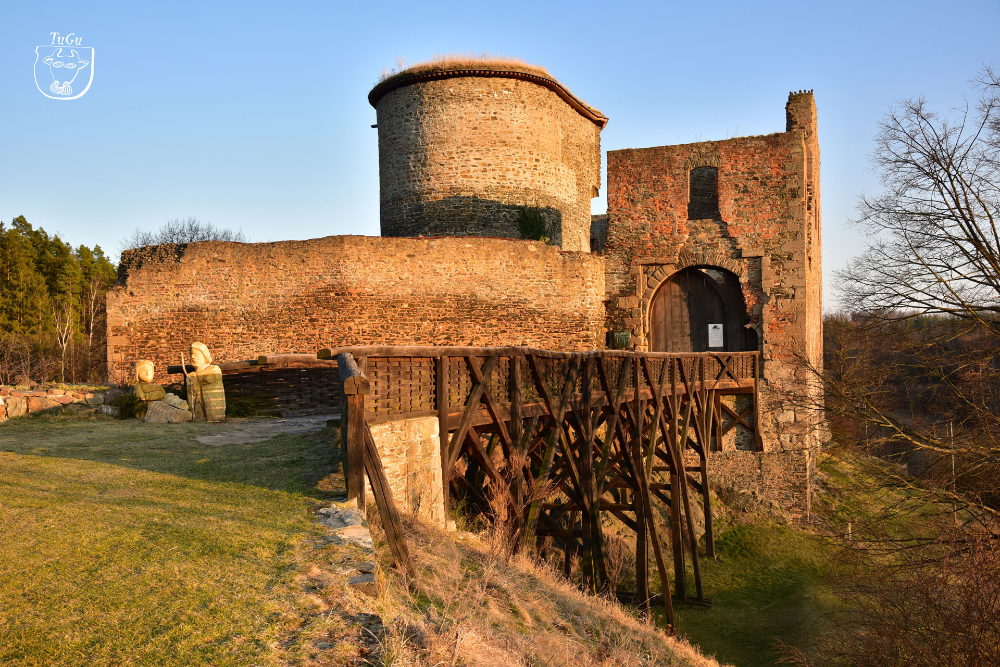
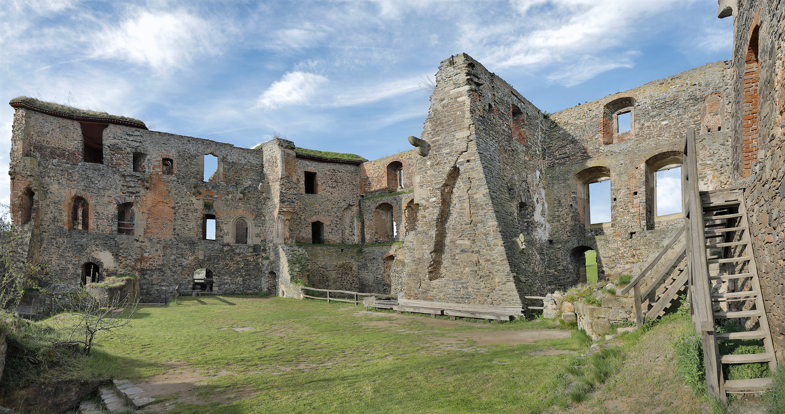

Hrad Krakovec
Krakovec je unikátní hradní architektura z konce 14. století. Postavit jej nechal Jíra z Roztok, oblíbenec krále Václava IV. Na rozdíl od jiných hradů té doby se Krakovec soustředil více na pohodlí bydlení než na obranu.
Historie
Hrad je známý především tím, že zde pobýval mistr Jan Hus před svým odjezdem do Kostnice v roce 1414. V roce 1783 hrad vyhořel a od té doby je zříceninou.

